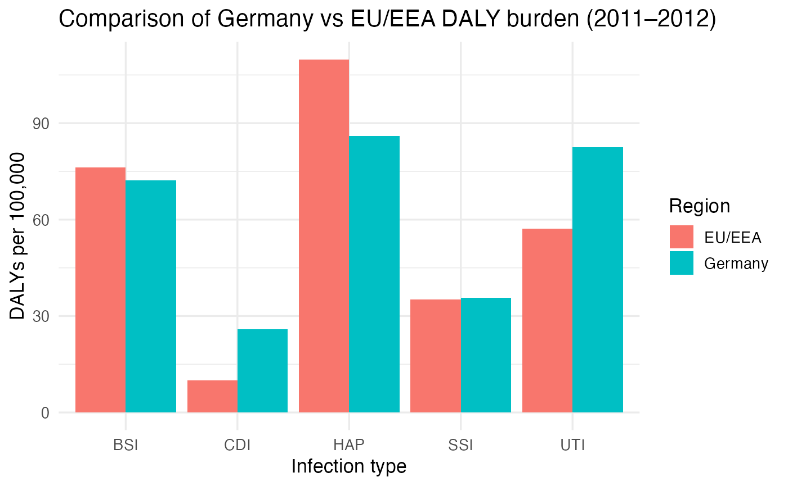
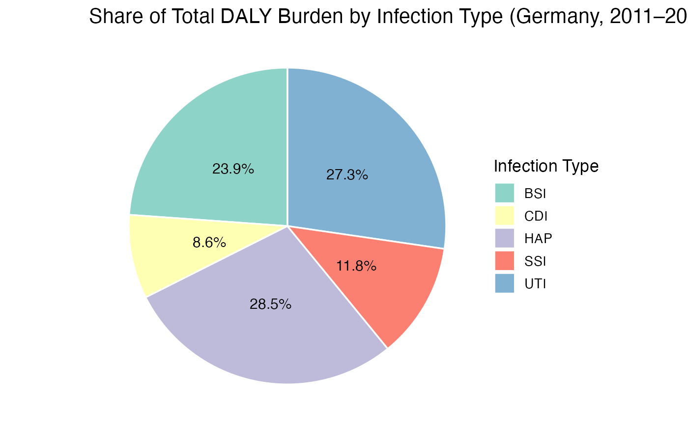

Reproducing Germany vs EU/EEA HAI Burden (BHAI)
Source:vignettes/package-to-read-germany-vs-eu-bhai.Rmd
package-to-read-germany-vs-eu-bhai.Rmd1. Introduction
This vignette demonstrates how the asg4 package
reproduces the core findings from Zacher et al. (2019) “Burden of
healthcare-associated infections in Germany based on the results of the
ECDC point prevalence survey (PPS) 2011–2012 using the BHAI methodology
(Burden of Healthcare-Associated Infections). The goal is to quantify
and visualise the burden of five major healthcare-associated infections
(HAIs) in terms of disability-adjusted life years (DALYs), and to
compare Germany with the broader EU/EEA region.
2. Data Assumptions and Limitations
The datasets included in this package were derived from the published tables in Zacher et al. (2019) and the ECDC PPS 2011–2012. Each record represents the median estimate of annual cases, attributable deaths, and DALYs by infection type. For Germany, values were computed using the BHAI R package and reflect the representative hospital sample used in that study.
asg4::metadata_bhai |>
knitr::kable(col.names = c("Item", "Value"))| Item | Value |
|---|---|
| Source | Zacher et al., Euro Surveill 2019 (doi:10.2807/1560-7917.ES.2019.24.46.1900135) |
| Survey period | ECDC Point Prevalence Survey 2011–2012 |
| Method | BHAI R package; incidence-based DALY estimation |
| Assumption | Applied EU/EEA McCabe distribution as proxy for Germany |
2.1 Assumption and Limitations
McCabe Distribution: The German PPS are using EU McCabe distribution. This scores might therefore overestimate the severity of underlying disease of German hospitalized patients.
Incidence Extrapolation: PPS data were converted to annual incidence using ECDC conversion factor.
Uncertainty: DALYs reported as median across monte-carlo simulations, no exact interval that is included in the data.
3. Comparing Infection Burden
We can visualize the relative severity of each infection type using DALYs per 100,000 population to see how Germany pattern align with EU/EEA context. the result show some infection are lower in Germany such as HAP and BSI, while UTI and CDI are higher compared to the region.
library(tidyr)
combined <- asg4::germany_burden |>
select(hai_type, dalys_per100k) |>
mutate(country = "Germany") |>
bind_rows(asg4::eu_eea_burden %>%
mutate(country = "EU/EEA"))
ggplot(combined, aes(x = hai_type, y = dalys_per100k, fill = country)) +
geom_col(position = "dodge") +
labs(
x = "Infection type",
y = "DALYs per 100,000",
title = "Comparison of Germany vs EU/EEA DALY burden (2011–2012)",
fill = "Region"
) +
theme_minimal(base_size = 13)
While within Germany, we could also know how each infection contributes to total DALYs burden
asg4::germany_burden |>
mutate(
share = dalys_per100k / sum(dalys_per100k),
label = paste0(hai_type, " (", round(share * 100, 1), "%)")
) |>
ggplot(aes(x = "", y = share, fill = hai_type)) +
geom_col(width = 1, color = "white") +
coord_polar(theta = "y") +
geom_text(aes(label = paste0(round(share * 100, 1), "%")),
position = position_stack(vjust = 0.5), size = 4) +
labs(
title = "Share of Total DALY Burden by Infection Type (Germany, 2011–2012)",
fill = "Infection Type", y = NULL, x = NULL
) +
scale_fill_brewer(palette = "Set3") +
theme_void(base_size = 13)
HAP (pneumonia) and UTI (urinary tract infection) make up most of the burden, together about two thirds of the total. BSI (bloodstream infection) also adds another share, while SSI and CDI are minor. Overall, most of Germany’s health loss from HAIs comes from lung, urinary, and bloodstream infections.
4. Discussion
Germany’s HAI burden shows clear difference in both magnitude and composition. The largest drivers of health loss are HAP, UTI, and BSI, which together account for nearly 90% of total DALYs. These infections are common in hospitalizedand carry high severity weights due to mortality risk. SSI and CDI contribute smaller shares, suggesting either effective infection control or lower incidence rates.
Compared to EU/EEA averages, Germany’s DALYs are slightly lower for pneumonia and bloodstream infections but higher for urinary and CDI. These differences likely reflect variations in healthcare settings, antibiotic resistance, and the use of EU/EEA McCabe severity distributions for Germany. Despite these variations, the ranking of infection burden remains consistent, underscoring the robustness of the BHAI methodology.
Overall, the analysis highlights where public health interventions could help: improved prevention and management of pneumonia, urinary, and bloodstream infections.
5. Reproducibility
This vignette shows a reproducible workflow: all data sets,
functions, and plots originate from the asg4package. There
are no external file reads, ensuring results can be regenerated from a
clean R session. The following elements make the analysis transparent
and replicable:
Data source: created in
data-raw/01_build_burden_data.Rand stored as.rdafiles underdata/.Functions: defined in
R/plot.R,R/table_burden.R, andR/launch_app.R.App & visualisations: use only packaged data (no external dependencies).
Documentation: automatically built with
devtools::document().Vignette reproducibility: every code chunk here runs directly from installed package objects.
This ensures that any user can install the package, rebuild the vignette, and obtain identical results.
The datasets used here are packaged within asg4, meaning
that:
The analysis can be replicated without re-downloading raw files.
All data transformations are visible in
data-raw/01_build_burden_data.R.